Un matamarcianos de scroll horizontal: la nave Metalion contra el Dr. Venom, planeta a planeta. Todo lo de esta página está leído en el código y las imágenes están dibujadas desde la ROM.
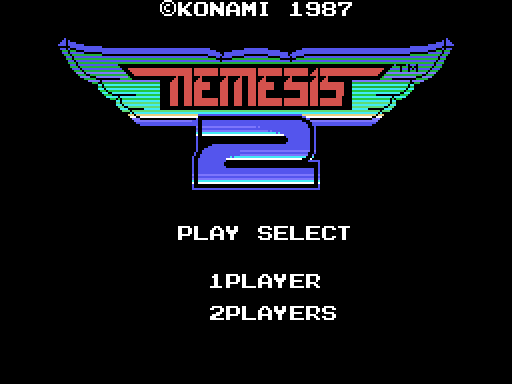
El título lo monta p01:615B y sus textos p01:61C1. En un MSX japonés (el byte 0x002B de la BIOS) el logotipo dice GRADIUS, y los textos de la historia y del final salen en japonés.
El mapa tiene doce fases (0xE201). La partida empieza en la 1 con 3 vidas (p00:5AD8). La que sigue la decide p01:7C59: se sube de la 1 a la 7, y después se baja de la 6 a la 0 con 0xE20A impar, que en muchos sitios trae más enemigos y más disparos. La 0 es la fortaleza del final, la 8 el interior de cada jefe y la 9, la 10 y la 11 son secretas. Cada fase tiene un punto de control (p01:694A) desde el que se sigue al perder una vida.
Los mapas se montan desde sus metabloques (p13:7900, p00:4889):
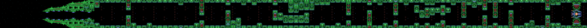
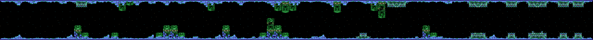
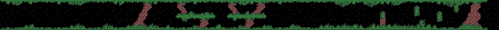
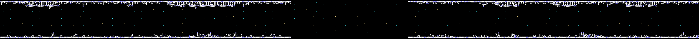
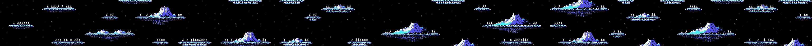
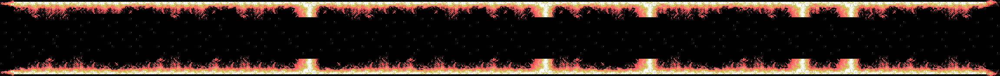
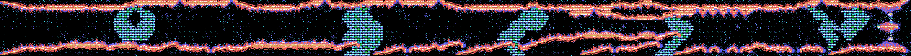
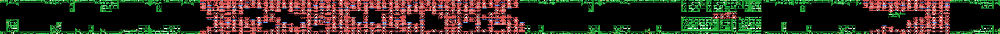
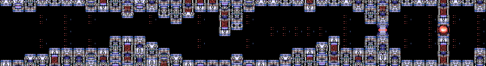
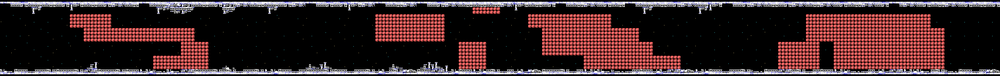
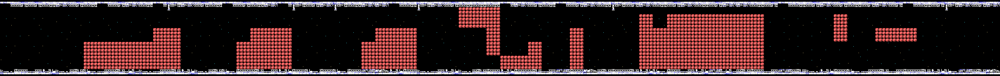
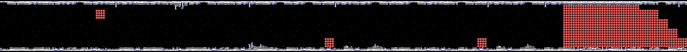
Lo que cierra cada fase lo dice su guion (p01:7A34):
| Fase | Al acabar el scroll |
|---|---|
| 1 | el jefe 1 |
| 2 y 3 | el jefe 4 |
| 4 | 600 cuadros más, el jefe 5 y luego el 2 |
| 5 | un pasillo de compuertas de 600 cuadros y luego el jefe 2 |
| 6 | dos piezas que lanzan rocas, sin jefe |
| 7 | el jefe 3 |
| 0 | un núcleo de 100 golpes |
Hay 65 tipos de enemigo, cada uno con su ficha de 7 bytes (p00:4F4C). En cada fase salen los de su lista, sus generadores, su oleada y los que sueltan los objetos y los jefes. Aquí van con el dibujo de su ficha y los dibujos de sprite de la fase; el número es el tipo.
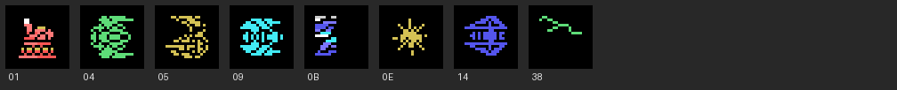
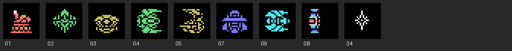
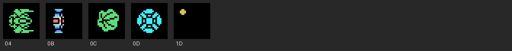
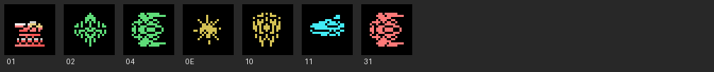
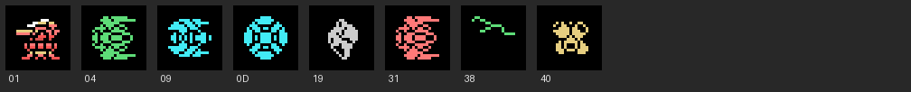
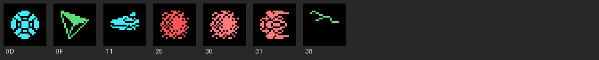
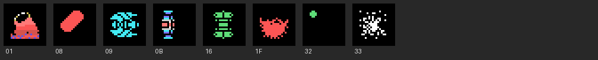
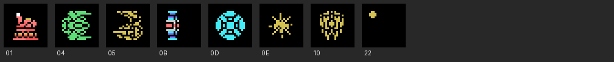
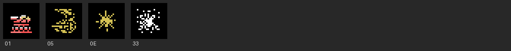
Los objetos de caracteres son parte del mapa: compuertas, cabezas que giran, torres que sueltan enemigos. Cada clase tiene sus formas (p15:B661):
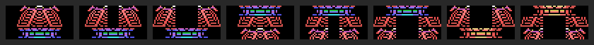
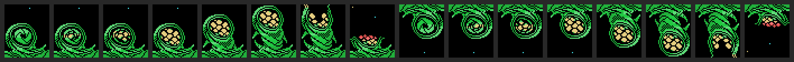
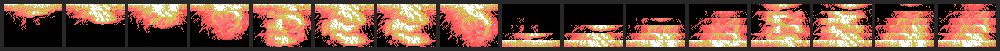
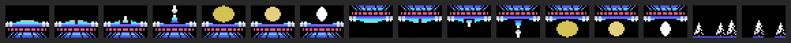
Son cinco (0xE340), cada uno con su ficha de 10 bytes (p09:BB01), su caja y su núcleo. El 1 dispara seis balas en abanico. El 2 embiste y suelta enemigos de cuatro sprites. El 3 lanza lenguas que crecen. El 4 suelta rayos. El 5 son diez piezas que salen de dos en dos.
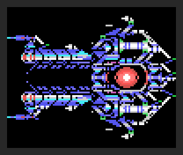
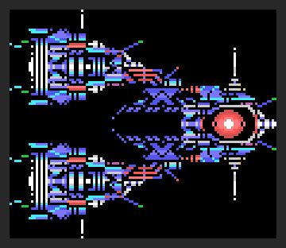
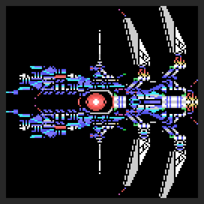
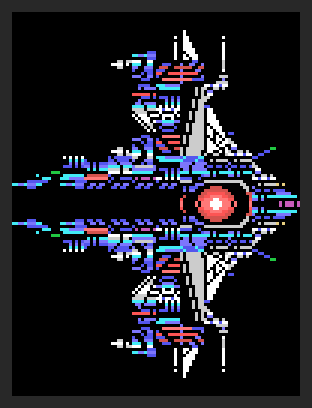
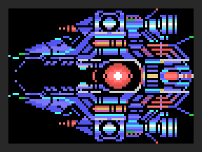
Al vencer a uno, su boca queda abierta 300 cuadros (p11:A93F). Si la nave entra, va al interior; si no, el jefe estalla y no hay interior.
Tiene un núcleo de 24 golpes (p02:8570). Al pasar la nave por su X empieza el final de 13 pasos (p01:74A2), con YOU CAPTURED. El premio depende de los cuadros que duró la pelea con el jefe (p02:9218): con menos de 300, dos armas; con menos de 900, una; si no, NOTHING.
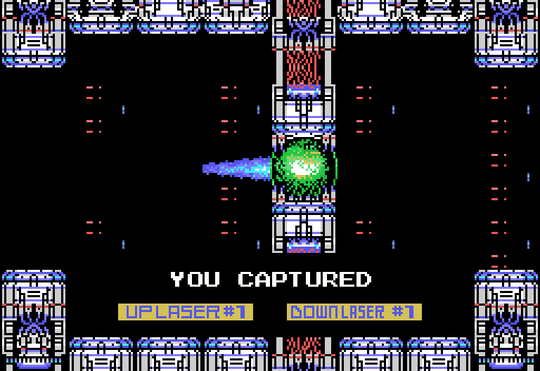
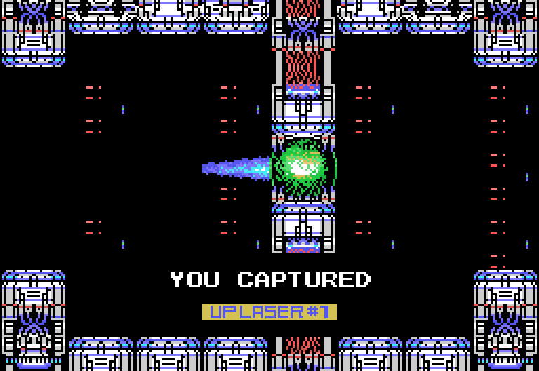
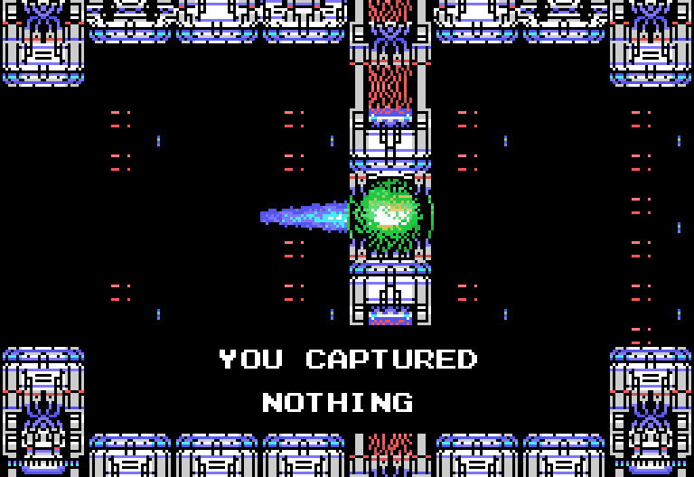
Las cápsulas rojas mueven la casilla encendida del medidor, y el otro botón la usa (p01:7D4F). El medidor tiene más o menos casillas según las armas capturadas (p02:8060). Las siete que se capturan, en orden, son UP LASER, DOWN LASER, NAPALM MISSILE, REFLEX RING, EXTEND LASER, BACK BEAM y FIRE BLASTER. El escudo aguanta 10 golpes, y la cápsula azul hace caer a todos los enemigos de la pantalla.
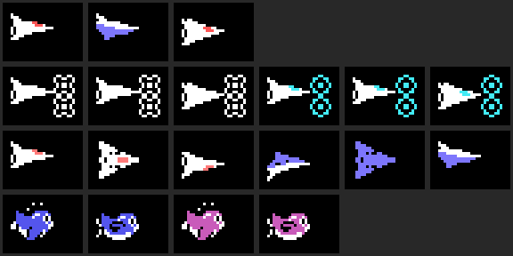
Los 25 rótulos del medidor (p14:9BD3):
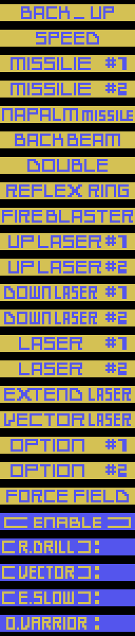
Las cápsulas especiales salen en el mapa y duran 15 segundos (p02:9034). Con D.VARRIOR las opciones giran alrededor de la nave; R.DRILL convierte la nave en una broca que rompe paredes; E.SLOW hace que los enemigos se muevan cuadro sí, cuadro no; VECTOR cambia el disparo.
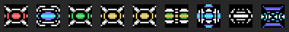
De izquierda a derecha: la del medidor (0x29), la que hace caer a todos (0x2A), la vida (0x2B), las dos de puntos (0x2C y 0x2D), y D.VARRIOR, R.DRILL, E.SLOW y VECTOR.